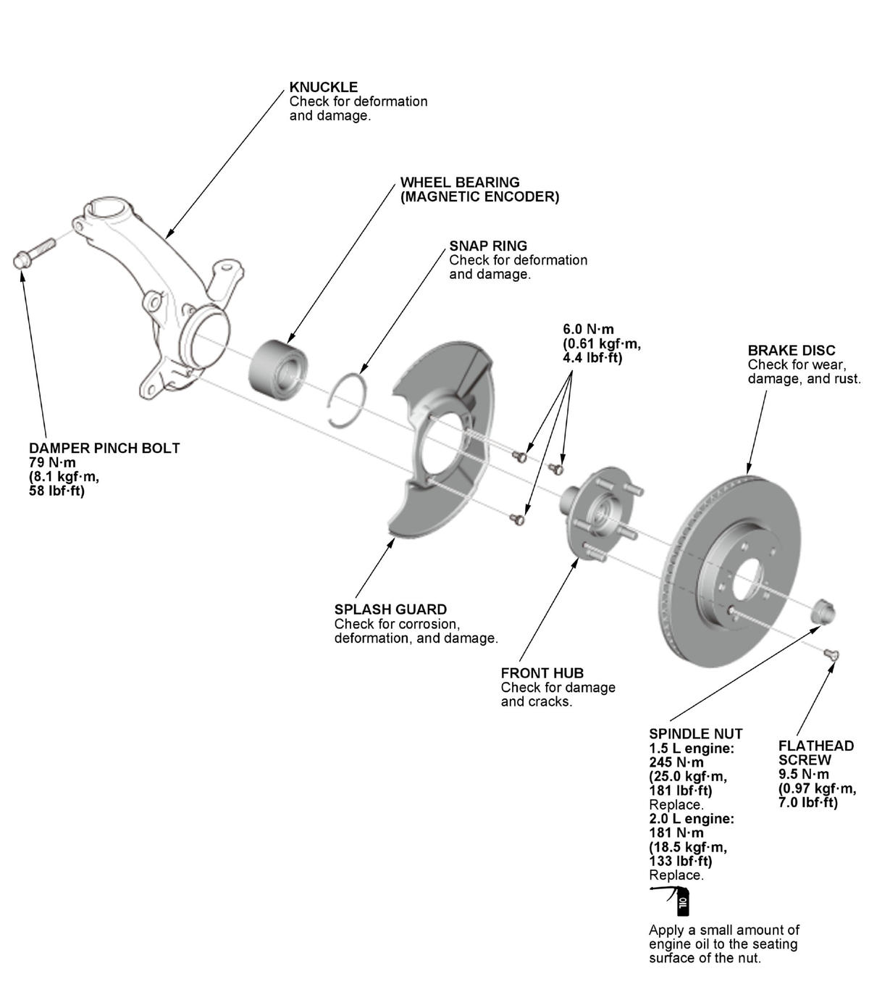

LEMON Manuals
: Even more car manuals for everyone: 1960-2025
Home
>>
Honda
>>
2016
>>
Civic LX, 4D Sedan, Automatic CVT Trans
>>
Repair and Diagnosis
>>
Suspension
>>
Rear Suspension
>>
Suspension System - Testing & Troubleshooting
>>
Replacement
>>
Front Knuckle/Hub/Wheel Bearing Replacement (Except Type-R)
>>
Exploded View
Exploded View
Knuckle/Hub/Wheel Bearing
Fig 1: Exploded View Of Front Knuckle/Hub/Wheel Bearing Replacement Components With Torque Specifications (Except Type-R)

Courtesy of HONDA, U.S.A., INC.